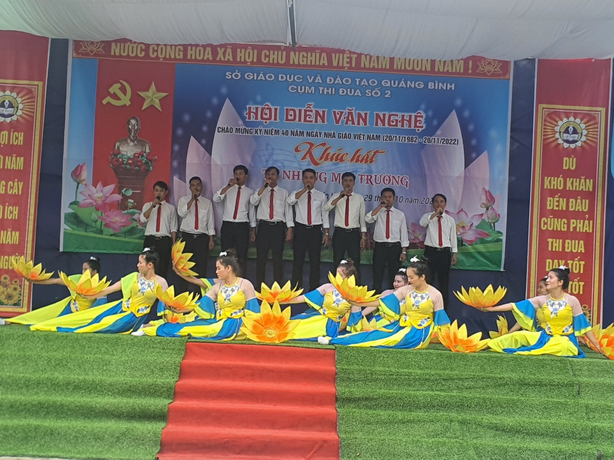
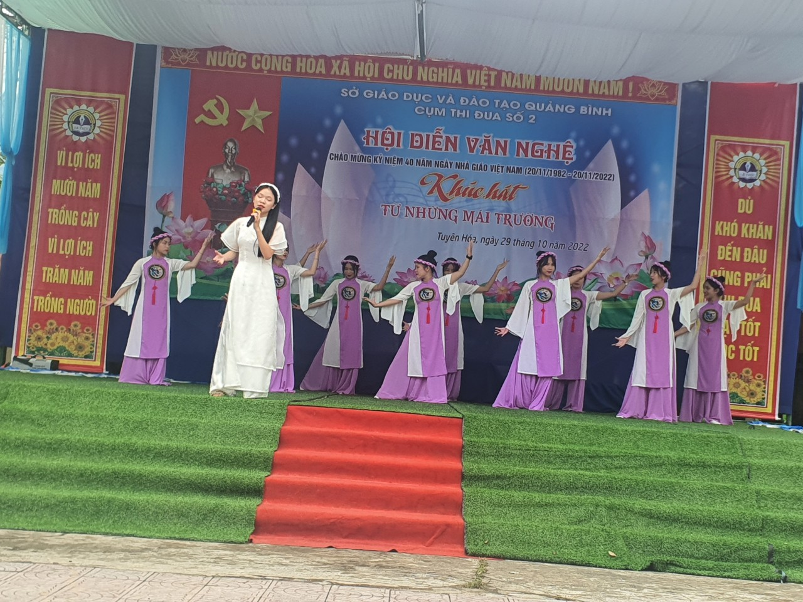
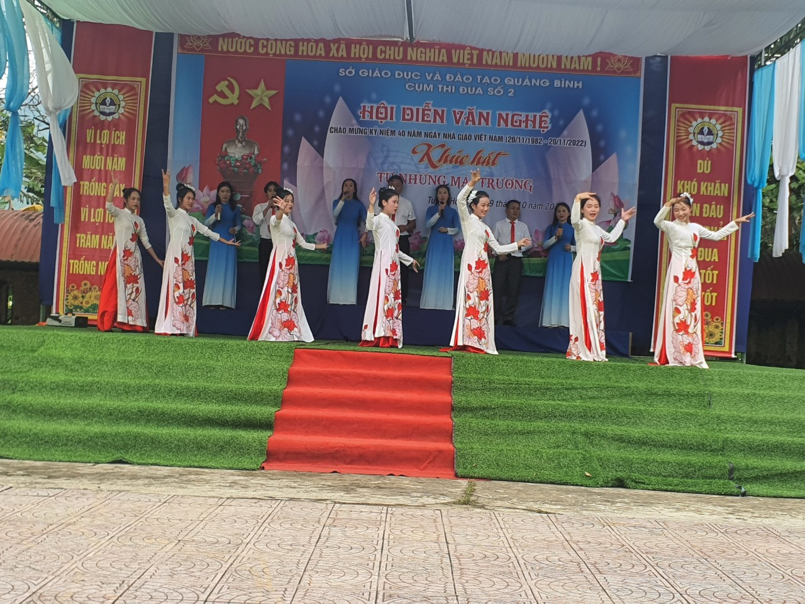
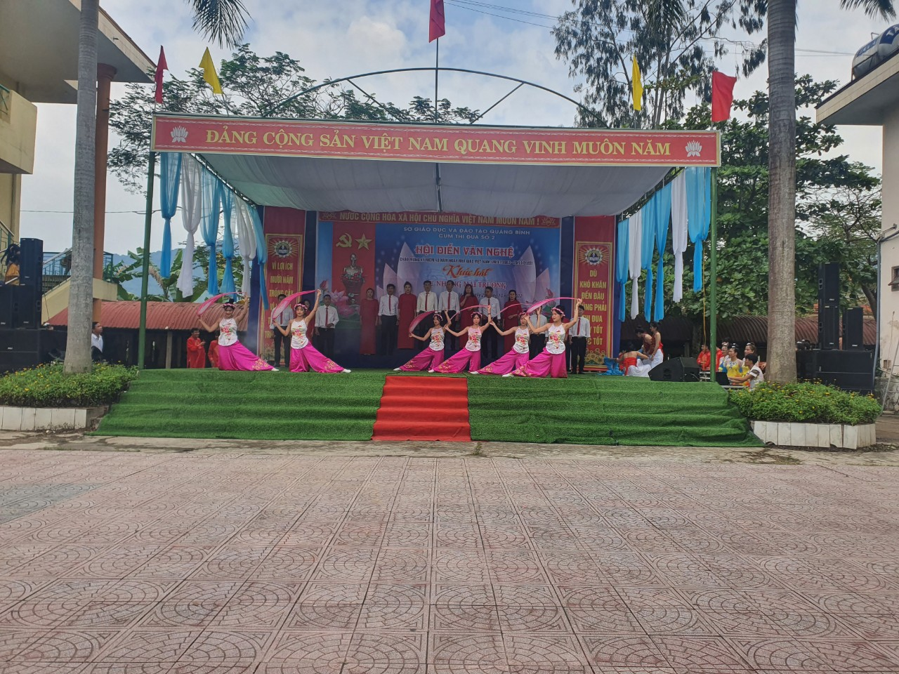
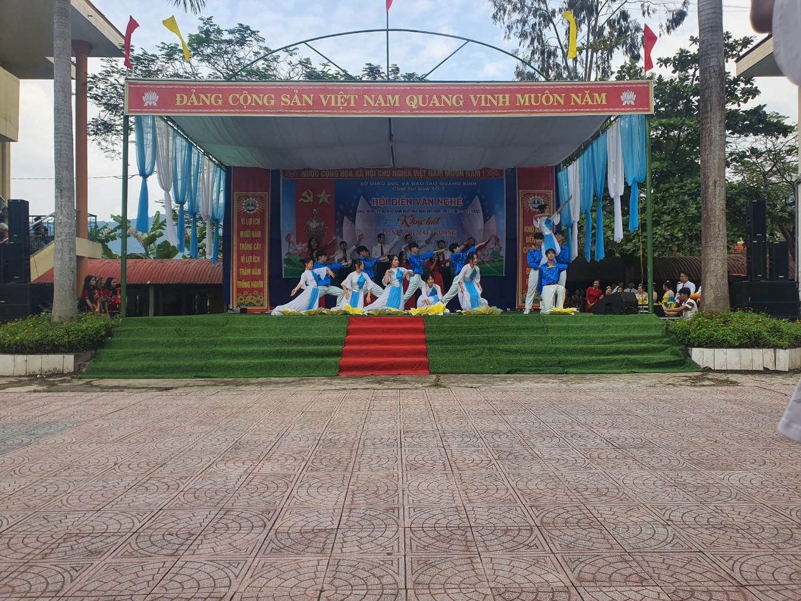

Thực hiện kế hoạch số 1385/KH-SGDĐT, ngày 26/10/2022 của Sở GD và ĐT Quảng Bình về việc tổ chức Hội diễn văn nghệ chào mừng kỷ niệm 40 năm ngày Nhà giáo Việt Nam (20/11/1982-20/11/2022). Ngày 29/10/2022 tại trường THPT Lê Trực đã diễn ra Hội diễn văn nghệ chào mừng Kỷ niệm 40 năm ngày Nhà Giáo Việt Nam (20/11/1982- 20/11/2022) cụm 2. Với chủ đề Khúc hát từ những mái trường.
Tham dự hội diễn có 16 tiết mục văn nghệ đến từ 5 đội văn nghệ của các đơn vị trong cụm thi đua số 2 ( THPT Lê Trực, THPT Phân Bội Châu, THPT Tuyên Hoá, THCS và THPT Bắc Sơn, Trung tâm GDNN và GDTX Tuyên Hoá).
Các tiết mục văn nghệ được đầu tư xây dựng công phu, đầy tính nghệ thuật. Nội dung tập trung chủ đề ca ngợi Đảng, ca ngợi chủ tịch Hồ Chí Minh, ca ngợi quê hương đất nước , ca ngợi ngành GDĐT và nghề dạy học.
Một số hình ảnh của các tiết mục tại hội diễn.
    Tác giả: Mai Nhất Thiên Bảo